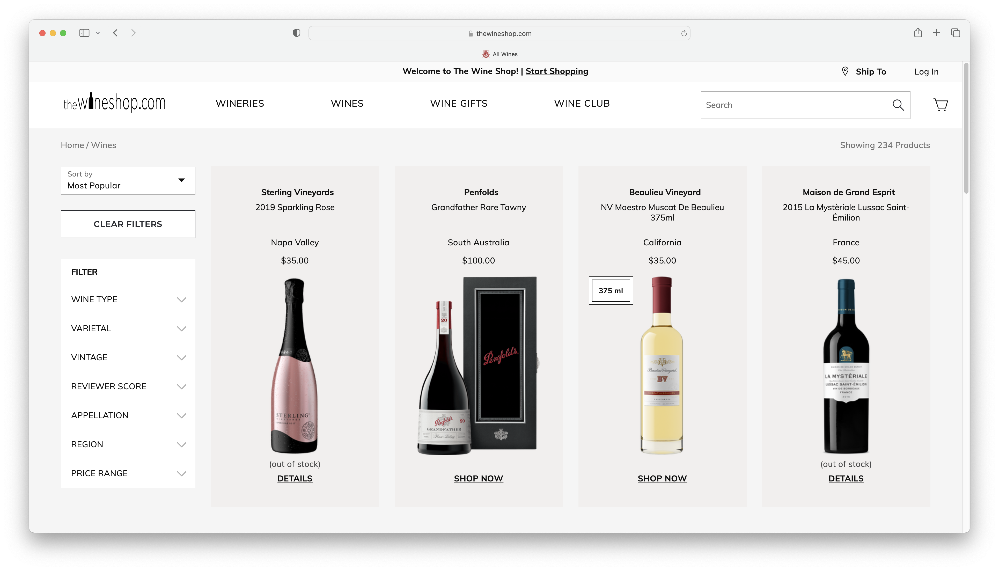
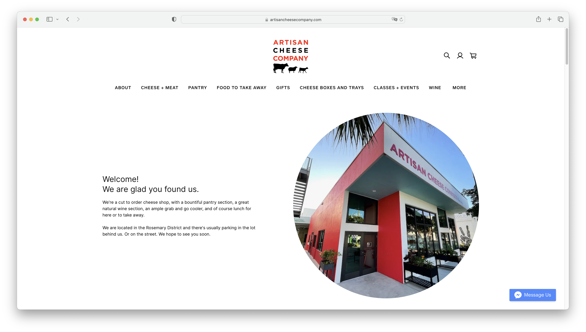
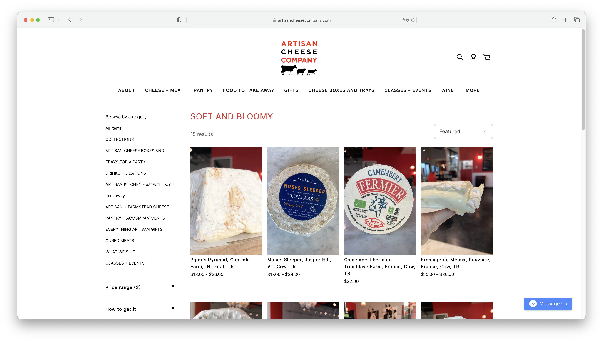
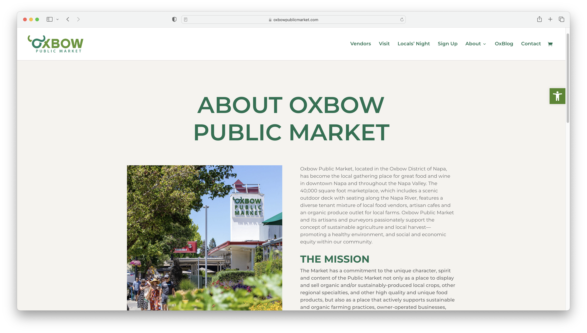
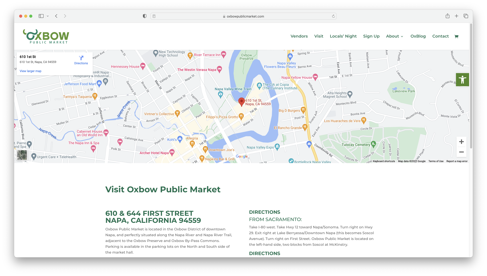

Final project proposal
Introduction
Brie and Bordeaux
Brie and Bordeaux is a shop of cheeses, wines, crackers, and more. We are your one stop shop for charcuterie boards, appetizer plates, and picnics. Our brand provides unique wine and handcrafted cheeses to the Central Coast and beyond. Try something new at Brie and Bordeaux!
Target audience
The target audience is adults over 21 that host parties and entertain often. Another group that is relevant to our business is those that go wine tasting often. People in relationships is another target of that larger group, because couples can find supplies for their dates at Brie and Bordeaux.
Their primary task and goal is to find unique luxury cheese and wines for entertaining. They are hosting an event and hope to find pairings that go well together. Locally made products are important to them and they will spend extra to have a higher quality product.
Comparative analysis
The Wine Shop

Artisan Cheese Company
 Oxbow Public Market
 Website content
Home
Welcome to Brie and Bordeaux! The shop for all of your charcuterie needs! Experience our luxury wines, handcrafted cheeses, and so much more.
[A picture of a charcuterie board with cheeses, meats, nuts, cracker, and other foods next to a glass of wine.]
About
We are a curated fine wine and cheese shop located on the Central Coast. We aim to provide the best quality with a variety of items for making charcuterie boards, gift baskets, or picnic snacks. Come in and see all that we have to offer!
[A picture of people enjoying wine and cheese together at a table in a outdoor environment.]
Menu
Shop our products online and ship to your home or order for pickup!
[A photo of a block of the Cal Poly Creamery Chipotle Cheddar.]
-
Cal Poly Creamery Chipotle Cheddar
Made on campus at Cal Poly, this cheese is smokey and sharp with some spice for a kick. Pair it with a hearty cracker.
$10
-
Cal Poly Creamery Cheddar
Tangy and sharp with a rich flavour. Perfect to pair with apples and a light red wine.
$10
-
Cal Poly Creamery Triple Peak Brie
Creamy and smooth, this brie is paired well with any jam or compote. Brie is always the best!
$12
-
2020 Baileyana El Gordo Chardonnay
Big toasted oak, marshmallow, pear, pineapple, and buttery aromas. Our El Gordo Chardonnay has a rich, creamy mouthfeel with flavors of dried apricot, vanilla and a touch of nuttiness.
$40
-
2019 Baileyana Firepeak Pinot Noir
Exemplifying the vivid excellence of the Edna Valley region, this Pinot Noir exudes expressive dark fruit notes, currants and blueberries, along with a hint of vanilla and cherry cola.
$30
-
2021 Baileyana Rosé of Pinot Noir
Our Baileyana Rosé of Pinot Noir is harvested to preserve freshness and its elegant fruit flavor. This wine is light pink, almost salmon in color, with fruit flavors bursting from the glass, including watermelon, strawberry, peach and melon with hints of rose petal and red raspberry.
$35
-
CLa Panzanella Rosemary Mini Croccatini Crackers
Add a dash of flavor to your day with these rosemary croccantini crackers. Their bright herbal taste is the perfect complement to rich cheeses and meat.
$5.50
-
Macy's Olive Oil And Sea Salt Crostini Toasts
Made with authentic baguette, olive oil and sea salt, these snack-size savory crostinis pair perfectly with dips, cheese or meats for an easy appetizer that pleases at parties.
$5
-
COLUMBUS® Calabrese Salami
Inspired by a recipe from the Calabria region of Italy, COLUMBUS makes their Calabrese from whole cuts of hand-trimmed pork and add crushed red pepper and red bell peppers to give the air-dried southern Italian favorite a ruby red color and spicy finish.
$7
-
Busseto Black Truffle Salami Nuggets
Crafted using time-honored methods and the finest ingredients, traditional salami is infused with the deep, earthy flavor of black truffles. Bite-sized for easy snacking, it makes a tasty addition to charcuterie platters and picnic spreads.
$7
-
Borgo De' Medici Truffle Honey
Imported from Italy, this Borgo de' Medici truffle honey is a true gourmet experience that infuses premium acacia honey with real black truffles foraged in the woods of Tuscany. A versatile condiment that pairs beautifully with a wide range of foods, it adds sweetness and earthy, umami-filled depth to salad dressings and marinades as an ingredient, cured meats and salmon as a glaze or artisan cheeses, crostini and bruschetta as a topping.
$9
Location
Brie and Bordeaux
3428 Chorro Street
San Luis Obispo, CA 93405
[A photo of the front of the Brie and Bordeaux shop, showing what the shop looks like from the street.]